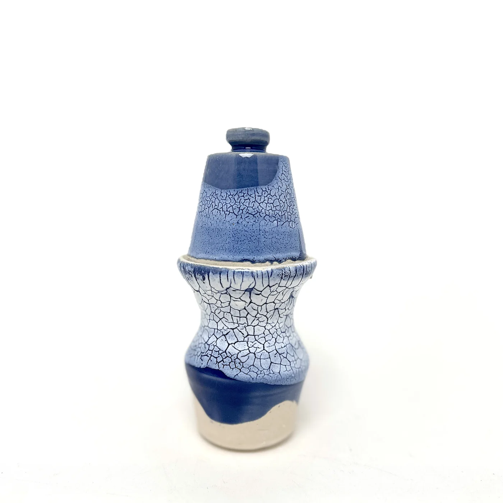
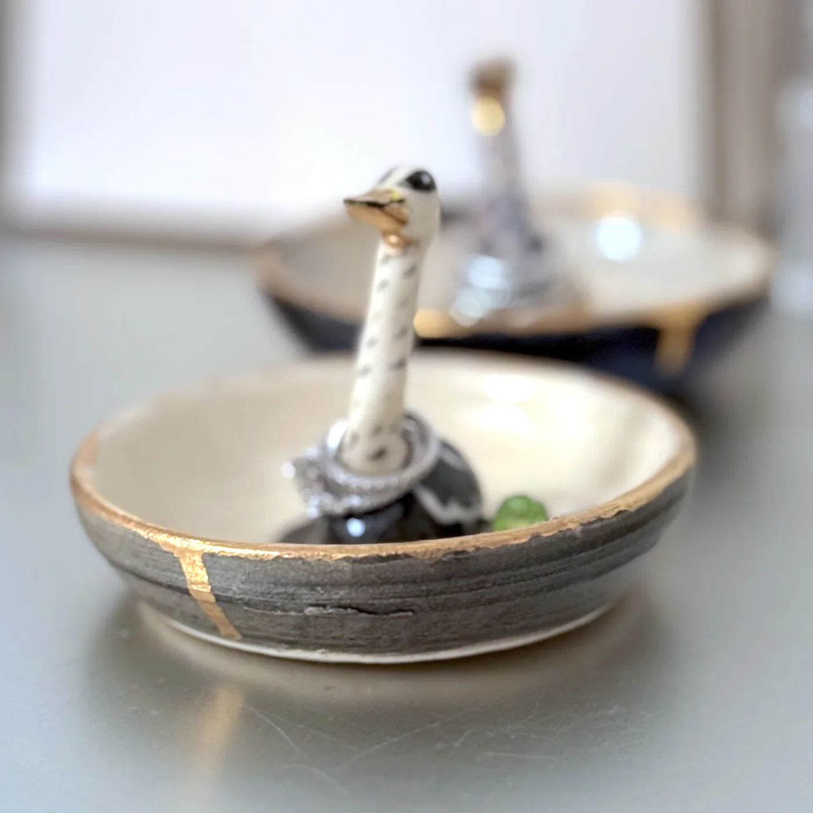
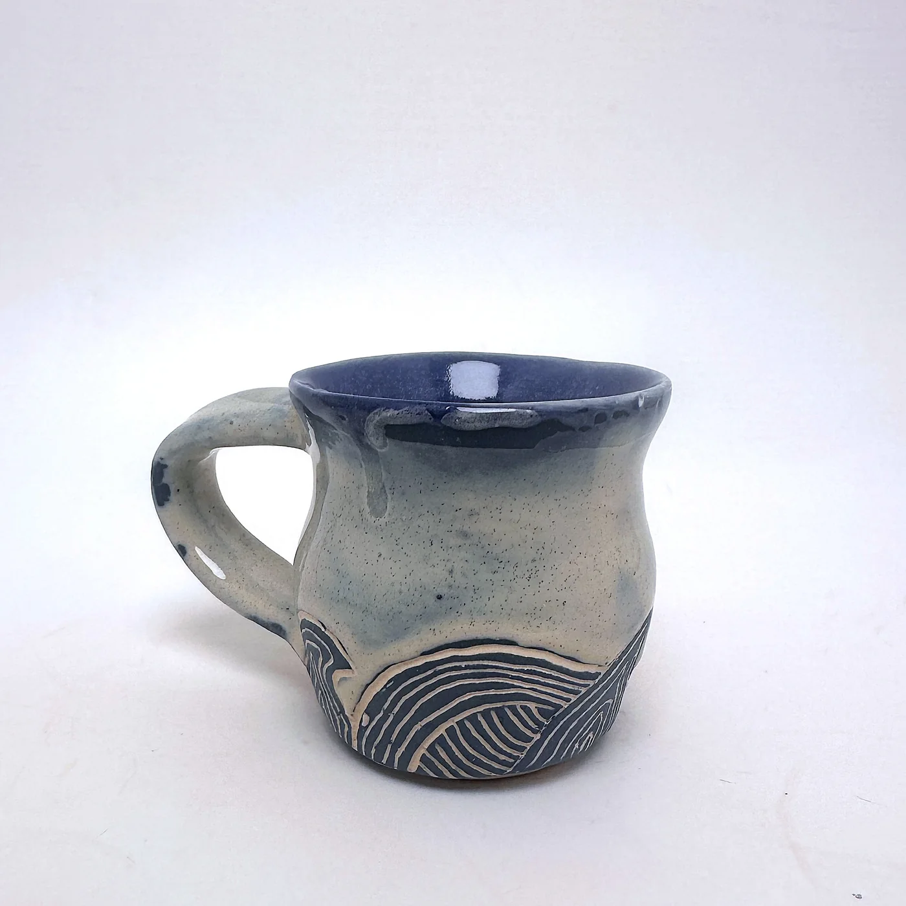

I started making ceramics during the pandemic.
I'm still exploring and discovering my style, aesthetic, and personal balance between form and function.
Here are some pieces that I had fun making for friends, family, and myself.
Click to see what I've made :)


